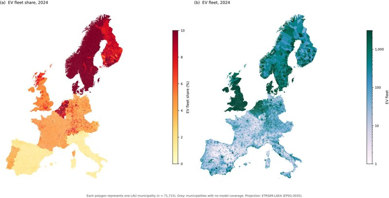
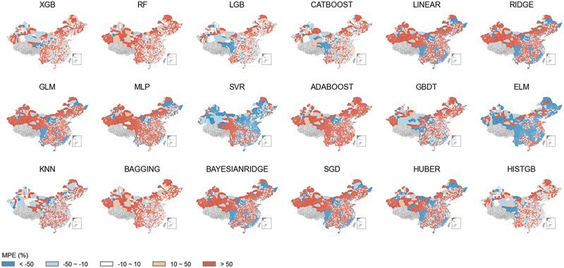
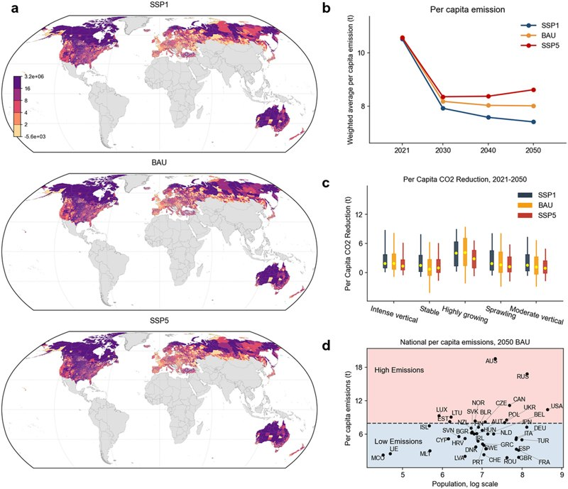

2026年9月
広島大学学生表彰
広島大学
特任研究員
国立研究開発法人 国立環境研究所（NIES）
Yukai Jin は国立環境研究所（NIES）の特任研究員です。2026年9月に広島大学で博士号を取得しました。都市の温室効果ガス排出、脱炭素化の経路、アーバンコンピューティングを主な研究テーマとしています。Scientific Data や Renewable and Sustainable Energy Reviews などの主要学術誌に論文を発表しており、イェール大学で客員研究員を務めました。

We present a longitudinal dataset of passenger vehicle fleet composition for 71,715 Local Administrative Units across 14 European countries over 2011–2024. An XGBoost-based spatial prediction model allocates official national vehicle statistics to municipalities using GDP per capita, population, and road-masked nighttime light intensity. The dataset distinguishes battery electric, plug-in hybrid, fuel-cell electric, and other vehicles. Independent validation using Eurostat regional data and municipal data from Norway and Sweden yields R² values of 0.82–0.98, supporting comparative analysis of electric vehicle adoption and spatial disparities.

This study evaluates 18 machine learning algorithms using county-level CO₂ emissions in China from 2001 to 2020 and 41 socioeconomic, environmental, and energy features. Nearly all models systematically overestimate emissions across space and time. Feature-selection comparisons and bootstrap uncertainty analysis show that aggressive dimensionality reduction often harms performance, while retaining diverse features helps capture the complexity of urban emissions. CatBoost and LightGBM perform best, highlighting the need to diagnose and correct systematic prediction biases for reliable urban carbon management.

We combine urban typological clustering with a context-aware FiLMSeq2Seq deep learning framework to project CO₂ emissions for 46,833 cities in Annex I countries through 2050 under Shared Socioeconomic Pathways. Five urban typologies exhibit distinct emission trajectories. Under the Business-As-Usual scenario, 31.5% of the 1,335 sprawling cities show emission growth, while moderate vertical cities contribute a total emission reduction of 798.2 Mt. These findings support strategies tailored to urban typology to realize cities’ decarbonization potential.
広島大学
広島大学
広島大学
国立環境研究所（NIES）
広東工業大学（中国）
江西農業大学（中国）
ティーチング・アシスタント · 広島大学
Jin, Y., & Sharifi, A. (2026). Estimated municipality-level electric vehicle and passenger vehicle fleet composition across 14 European countries, 2011–2024. Scientific Data. https://doi.org/10.1038/s41597-026-08445-z Dataset: https://doi.org/10.6084/m9.figshare.32241864
@article{jin2026evfleet,
author = {Jin, Yukai and Sharifi, Ayyoob},
title = {Estimated municipality-level electric vehicle and passenger vehicle fleet composition across 14 European countries, 2011--2024},
journal = {Scientific Data},
year = {2026},
doi = {10.1038/s41597-026-08445-z}
}
@misc{jin2026evfleetdata,
author = {Jin, Yukai and Sharifi, Ayyoob},
title = {Estimated municipality-level electric vehicle and passenger vehicle fleet composition across 14 European countries, 2011--2024},
publisher = {Figshare},
year = {2026},
doi = {10.6084/m9.figshare.32241864}
}